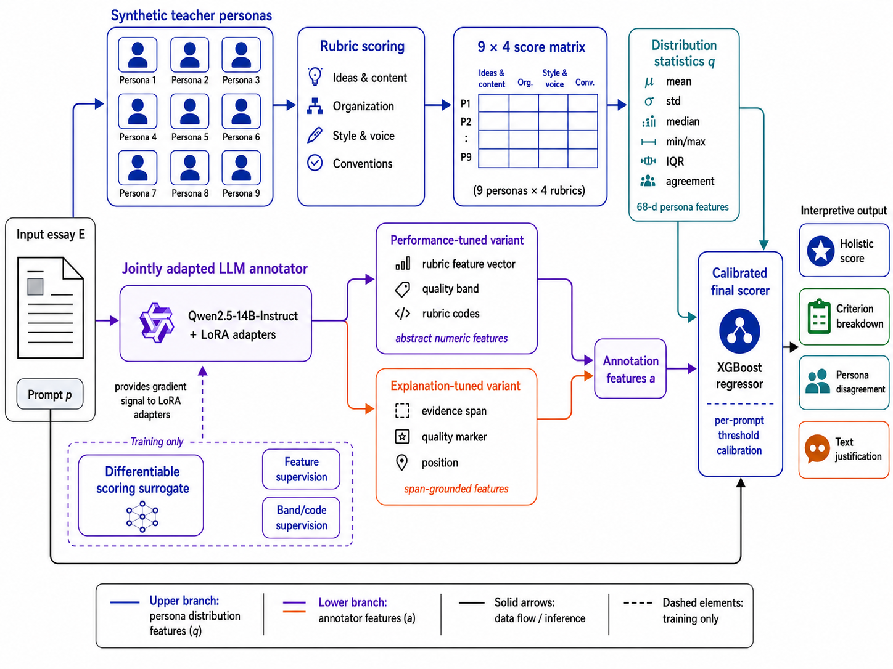

Abstract
Automated Essay Scoring systems can achieve strong agreement with human graders, but their limited interpretability constrains use in educational settings where feedback, contestability, and auditability matter. GRADE combines synthetic teacher-persona distributions with a jointly LoRA-adapted LLM annotator, supporting two operating points: a performance-tuned variant that prioritizes accuracy, and an explanation-tuned variant that constrains every scorer feature to trace back to a verbatim essay span.
Distributional grading
Nine synthetic teacher personas score each essay across rubric dimensions, exposing plausible disagreement rather than only one point estimate.
Task-aligned annotations
A LoRA-adapted LLM annotator learns rubric features through a differentiable scoring-surrogate loss while auxiliary losses preserve annotation structure.
Span-verifiable feedback
The explanation-tuned variant traces every scorer feature to an inspectable text span, with a verifier that flags unsupported claims rather than silently repairing them.
Method overview
Each essay is processed through two complementary branches: persona-based rubric distributions and a jointly adapted LLM annotator. Their features are combined by a calibrated final scorer that applies per-prompt threshold optimization on the training partition only.

Synthetic teacher ensemble
Nine personas with distinct grading orientations produce a 9 × 4 rubric-score matrix per essay. Distribution statistics — mean, standard deviation, IQR, and agreement ratio — form a 68-dimensional persona feature vector.
Qwen2.5-14B + LoRA
Adapters are trained through a differentiable scoring-surrogate loss with auxiliary supervision. The annotator emits either abstract numeric features (50-dim) for performance or span-grounded features (42-dim) for verifiability.
Calibrated prediction
An XGBoost regressor combines annotation features, persona statistics, and the prompt indicator. Per-prompt thresholds are fit on training-partition predictions only.
Results on ASAP2
GRADE offers two operating points on the 16,392-essay ASAP2 benchmark: peak accuracy with abstract numeric features, or stronger verifiability with span-grounded features. The public code reproduces the locked, non-leaky held-out result with thresholds fit without using held-out labels.
weak_prompt_patch recipe. The explanation-tuned grounded run trades peak accuracy for span-verifiable evidence, reaching approximately 0.778 QWK while producing the highlighted reports below.
Grounded report demo
Anonymized examples from the held-out ASAP2 test set, showing the explanation-tuned report format.
Highlighted essay text
Verified essay evidence
Rubric feature scores
Detailed references
Persona disagreement snapshot
Mean (●) and ±1 std spread across nine teacher personas. Tighter spreads indicate higher inter-rater agreement.
Citation
@inproceedings{grade2026,
title = {GRADE: Grounded Rubric Annotation and Distributional Evaluation
for Explainable Essay Scoring},
author = {Anonymous Authors},
booktitle = {Advances in Neural Information Processing Systems},
year = {2026},
note = {Under review}
}